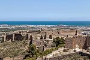

Welcome to Wikipedia
the free encyclopedia that anyone can edit. 5,388,514 articles in English
- Arts
- Biography
- Geography
- History
- Mathematics
- Science
- Society
- Technology
- All portals

Kona Lanes was a 40-lane bowling center in Costa Mesa, California, that closed in 2003 after 45 years in business. Built during the advent of Googie architecture, its Polynesian Tiki-themed styling extended from the large roadside neon sign to what the Los Angeles Times called the building's "flamboyant neon lights and ostentatious rooflines meant to attract motorists like moths". At its peak, Kona Lanes was open 24 hours a day, averaging more than 80 ten-frame games of bowling on each of its 40 lanes. The center also hosted music concerts and other events. Following years of decline, Kona Lanes closed and was torn down in 2003; a portion of the distinctive sign (pictured) was saved and sent to Cincinnati, Ohio, for display in the American Sign Museum. Plans for a department store on the Kona Lanes site were rejected; in 2010, the still-unused land was rezoned for senior citizens' apartments and commercial development. Construction on the apartment complex began in 2013 after the lot had sat empty for ten years. (Full article...) Recently featured: Donnchadh, Earl of Carrick Sino-Roman relations Villa Park Archive By email More featured articles..
- ... that Hannibal sacked the Iberian settlement within the site of Sagunto Castle (pictured), an action that led to the Second Punic War?
- ... that the Hopkins County Museum and Heritage Park includes the Atkins House, the oldest brick building in Hopkins County, Texas?
- ... that Call of Duty: Modern Warfare Remastered was the first Call of Duty game to have accurate bullet casings ejected from every gun?
- ... that microbiologist Jane Gibson established through her 1954 discovery that selenium, a trace element, is essential for coliform bacterial growth?
- ... that Abu Omar returned home after the Battle of Aleppo to find that only 13 of his 30 vintage cars remained?
- ... that Ilse Hess, who was one of the first women to study at the University of Munich, remained a committed Nazi after World War II
- .. that "When in Rome, do as the Romans do" means that it is advisable to follow the conventions of the area in which you are residing or visiting?
- ... that Elder Charles D. Beck's boogie-woogie-based piano playing on "Memphis Flu" anticipated the style of rock and roll pianists?
Recent additions Start a new article Nominate an article.
- Turkey votes in favour of changing the parliamentary system of government to an executive presidency in a constitutional referendum.
- A suicide bombing of civilian evacuation buses near Aleppo, Syria, kills more than 120 people, including 68 children
- Emma Morano, the last living person born before 1900, dies at the age of 117.
- Pakistan sentences former Indian naval officer Kulbhushan Jadhav to death for espionage and sabotage.
Ongoing: Battle of Mosul. Recent deaths: Aaron Hernandez Rosey Allan Holdsworth
April 20: Ridván begins at sunset (Bahá'í Faith); 4/20 (cannabis culture)
- ... that Hannibal sacked the Iberian settlement within the site of Sagunto Castle (pictured), an action that led to the Second Punic War?
- ... that the Hopkins County Museum and Heritage Park includes the Atkins House, the oldest brick building in Hopkins County, Texas?
- ... that Call of Duty: Modern Warfare Remastered was the first Call of Duty game to have accurate bullet casings ejected from every gun?
- ... that microbiologist Jane Gibson established through her 1954 discovery that selenium, a trace element, is essential for coliform bacterial growth?
- ... that Abu Omar returned home after the Battle of Aleppo to find that only 13 of his 30 vintage cars remained?
- ... that Ilse Hess, who was one of the first women to study at the University of Munich, remained a committed Nazi after World War II
- .. that "When in Rome, do as the Romans do" means that it is advisable to follow the conventions of the area in which you are residing or visiting?
- ... that Elder Charles D. Beck's boogie-woogie-based piano playing on "Memphis Flu" anticipated the style of rock and roll pianists?
Recent additions Start a new article Nominate an article.
Girl with a Pearl Earring is an oil painting by 17th-century Dutch painter Johannes Vermeer. This tronie depicts a girl in an exotic dress, an oriental turban, and a pearl earring. The painting has been in the collection of the Mauritshuis in The Hague since 1902. Painting: Johannes Vermeer Recently featured: Cassiopeia Allie Mae Burroughs Point Lobos Archive More featured pictures...